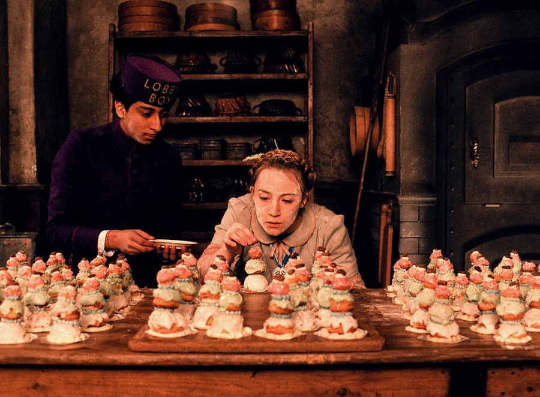

Courtesan Au Chocolat

Description
Wes Anderson's films are rife with clashing color schemes, furrow-browed pedantry, and rich character development set against an oddly symmetrical backdrop. In the case of The Grand Budapest Hotel, it's also home to a pastry as precious as its parentage. The Courtesan au Chocolat is a delicate tower of puffed up pâtissière and saccharine masonry that is sure to wow any guests that might need some impressing.
Ingredients
- 1 cup flour
- Pinch of salt
- Pinch of sugar
- 1 cup water
- 3/4 cup butter, divided
- 4 eggs
- 1/4 cup sugar
- 1 Tbsp flour
- 1 1/2 Tbsp cornstarch
- 3 egg yolks
- 3 cups whole milk, divided
- 8 ounces dark chocolate, chopped
- 3 cups confectioner's sugar, divided
- 12 cocoa beans
- Food coloring
- 4 ounces white chocolate
Steps
- Make the pâte à choux: Whisk together flour, salt, and sugar in a bowl, and set aside. Combine water and 1/2 cup butter in a saucepan over medium heat, and stir until butter has melted. Add flour mixture and stir with a wooden spoon over medium-low heat until dough pulls away from the sides of the pan and forms a ball. Remove from the heat and allow to cool 1 minute before adding eggs and stirring until homogenous.
- Fill pastry bag with choux dough and on a silicone baking sheet or parchment paper, pipe 1/2”, 1”, and 1 1/2” rounds of dough. Bake at 400°F for 15-20 minutes, or until risen and golden. Allow to cool completely.
- Make the crème pâtissière: in a large bowl, whisk together sugar, flour, cornstarch, and egg yolks. In a saucepan over medium-low heat, heat 2 cups of the milk until steaming. Add the chocolate and whisk until completely incorporated - do not allow to boil. Whisking constantly, pour half the chocolate mixture into the flour and egg mixture, beating until fully incorporated. Return this mixture to the remaining milk and chocolate in the saucepan, and stir over low heat until thickened. Refrigerate until cooled completely.
- Make the icings: In a medium bowl, whisk confectioners sugar while slowly pouring in milk, until a thin glaze is formed. Divide into 3 smaller bowls, and color with purple, green, and pink food colorings.
- In another medium bowl, combine remaining confectioner's sugar, butter, and 1 tablespoon milk. With an electric hand mixer running, slowly drizzle in more milk until a thick frosting is formed. Color with blue food coloring.
- Assemble the Courtesan au Chocolat: Using a small knife, cut a hole in the bottom of each choux ball. Pipe the choux full of crème pâtissière, and dip the top of the choux in the different colored glazes - purple for the largest, green for the medium-sized, and pink for the smallest.
- In a double boiler, melt white chocolate completely, and allow to cool until handleable. Combine with yellow food coloring, and using a very small pastry bag tip, pipe a filigree of white chocolate on each choux ball.
- Pipe a dollop of blue frosting on the center of a large choux ball, and top with the medium, repeating with the smallest. Top the smallest with another dot of blue frosting, and top that with a single cocoa bean before serving.